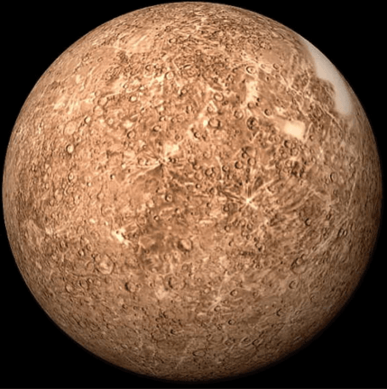

Planeta Terra
O planeta Terra é o planeta habitado por nós, seres vivos. Conhecido também como planeta água, é o maior dentre os quatro planetas rochosos que fazem parte do Sistema Solar. O Planeta Terra é um dos planetas que fazem parte do Sistema Solar e é o terceiro planeta mais próximo do Sol. saiba mais em: planeta terra
Marte
Marte é o quarto planeta a partir do Sol, o segundo menor do Sistema Solar. Batizado em homenagem ao deus romano da guerra, muitas vezes é descrito como o "Planeta Vermelho", porque o óxido de ferro predominante em sua superfície lhe dá uma aparência avermelhada. saiba mais em: marte

Saturno
Saturno é o sexto planeta a partir do Sol e o segundo maior do Sistema Solar atrás de Júpiter. Pertencente ao grupo dos gigantes gasosos, possui cerca de 95 massas terrestres e orbita a uma distância média de 9,5 unidades astronômicas. saiba mais em: saturno
Júpiter
Júpiter é o maior planeta do Sistema Solar, tanto em diâmetro quanto em massa, e é o quinto mais próximo do Sol. Possui menos de um milésimo da massa solar, contudo tem 2,5 vezes a massa de todos os outros planetas em conjunto. É um planeta gasoso, junto com Saturno, Urano e Netuno. Saiba mais emJúpiter

Mercúrio
Mercúrio é o menor e mais interno planeta do Sistema Solar, orbitando o Sol a cada 87,969 dias terrestres. A sua órbita tem a maior excentricidade e o seu eixo apresenta a menor inclinação em relação ao plano da órbita dentre todos os planetas do Sistema Solar. Saiba mais em: Mercúrio

Vênus
Vénus ou Vênus é o segundo planeta do Sistema Solar em ordem de distância a partir do Sol, orbitando-o a cada 224,7 dias. Recebeu seu nome em homenagem à deusa romana do amor e da beleza Vénus, equivalente a Afrodite. Saiba mais em Vênus
Urano
Urano é o sétimo planeta a partir do Sol, o terceiro maior e o quarto mais massivo dos oito planetas do Sistema Solar. Foi nomeado em homenagem ao deus grego do céu, Urano, o pai de Cronos e o avô de Zeus. Saiba mais em Urano
Netuno
Netuno ou Neptuno é o oitavo planeta do Sistema Solar, o último a partir do Sol desde a reclassificação de Plutão para a categoria de planeta anão, em 2006. Pertencente ao grupo dos gigantes gasosos, possui um tamanho ligeiramente menor que o de Urano, mas maior massa, equivalente a 17 massas terrestres. Saiba mais em Netuno
Oque são galáxias ?
Gálaxias
Na cosmologia, uma galáxia é um grande sistema, gravitacionalmente ligado, que consiste de estrelas, remanescentes de estrelas, um meio interestelar de gás e poeira, e um, importante mas insuficientemente conhecido, componente apelidado de matéria escura. Saiba mais em Gálaxias
Galáxias
Via Láctea
A Via Láctea é uma galáxia espiral, da qual o Sistema Solar faz parte. Vista da Terra, aparece como uma faixa brilhante e difusa que circunda toda a esfera celeste, recortada por nuvens moleculares que lhe conferem um intrincado aspecto irregular e recortado. Saiba Mais em Via Láctea
Grande Nuvem de Magalhães
Grande Nuvem de Magalhães é uma galáxia anã satélite que orbita a Via Láctea. O seu diâmetro é vinte vezes menor do que o da Via Láctea e o seu número de estrelas dez vezes menor. Embora parte de sua morfologia seja irregular, a Grande Nuvem de Magalhães tem traços de uma estrutura espiralada. Saiba mais em Grande Nuvem de Magalhães
Pequena Nuvem de Magalhães
A Pequena Nuvem de Magalhães, é uma galáxia anã próxima a Via Láctea. Classificada como galáxia irregular anã, a PNM tem aproximadamente 7000 anos luz, contém algumas centenas de milhões de estrelas, e a massa de aproximadamente 7 bilhões de massa solares. Siba mais em Pequena Nuvem de Magalhães
Galáxia de Andrômeda
A galáxia de Andrômeda é uma galáxia espiral localizada a cerca de 2,54 milhões de anos-luz de distância da Terra, na direção da constelação de Andrômeda. Saiba mais em Galáxia de Andrômeda
caso queira saber o nome de mais galáxias ou mais informações acesse https://pt.wikipedia.org/wiki/Lista_de_gal%C3%A1xias